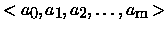

| Addition Chains |
An addition chain for n is an integer sequence $"> with the following four properties:
You are given an integer n. Your job is to construct an addition chain for n with minimal length. If there is more than one such sequence, any one is acceptable.
For example, <1,2,3,5> and <1,2,4,5> are both valid solutions when you are asked for an addition chain for 5.
Hint: The problem is a little time-critical, so use proper break conditions where necessary to reduce the search space.
5 7 12 15 77 0
1 2 4 5 1 2 4 6 7 1 2 4 8 12 1 2 4 5 10 15 1 2 4 8 9 17 34 68 77